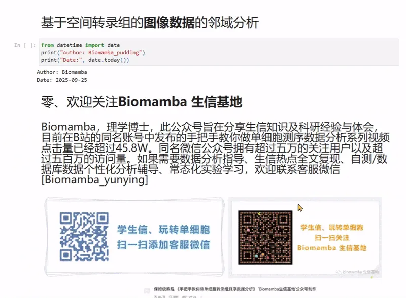
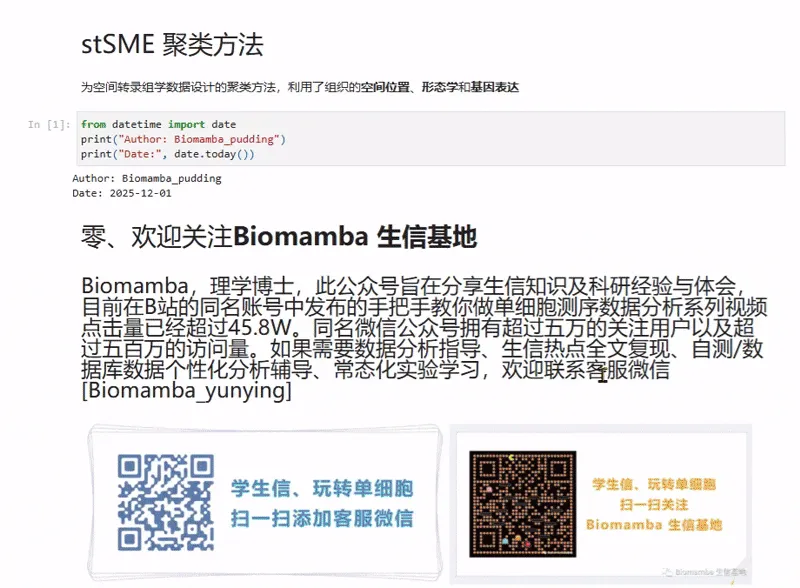
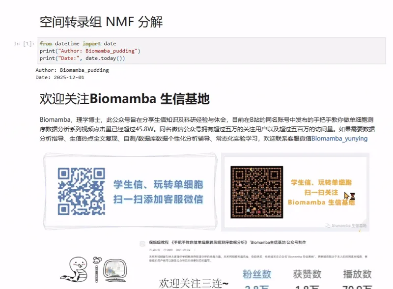

三种方法教你搞定空转数据邻域分析：squidpy+stSME+NMF分解
原文：https://mp.weixin.qq.com/s?__biz=MzAwMzIzOTk5OQ==&mid=2247538803&idx=2&sn=54db98682dcff3feb04a5623c37546ce&chksm=9b3c2123ac4ba835ea136c12212da54b0bf9147192926e16b6027dfc1735e56a0c21aaf8d130#rd 合集：空间转录组

空间转录组数据邻域分析手册

 邻域分析是基于空间位置的细胞/spot邻域划分与表达谱分析，具有从“单细胞”到“细胞群落”的表型解析，揭示群体功能的核心价值，以及阐明细胞间通讯、微环境异质性、结构-功能关联的生物学意义，为肿瘤微环境解析、组织发育机制等研究提供空间维度证据。与传统分析相比，邻域分析可以将空间位置权重纳入基因表达解读，突破纯表达谱分析的局限。工具简介：
邻域分析是基于空间位置的细胞/spot邻域划分与表达谱分析，具有从“单细胞”到“细胞群落”的表型解析，揭示群体功能的核心价值，以及阐明细胞间通讯、微环境异质性、结构-功能关联的生物学意义，为肿瘤微环境解析、组织发育机制等研究提供空间维度证据。与传统分析相比，邻域分析可以将空间位置权重纳入基因表达解读，突破纯表达谱分析的局限。工具简介：
1、squidpy的邻域分析的核心目标是在Visium空间转录组分析中，Spot的基因表达数据提供了分子信息，而高分辨率组织图像则提供了细胞形态和组织结构的视觉信息。我们可以从组织图像中计算每个Visium spot(Spot)的图像特征。这些特征将作为一个obs × 特征矩阵，与obs×基因表达矩阵一起存储在AnnData对象中，用于下游的联合分析。
2、stSME是通过spot图像的相似性来调整基因表达，使相似的组织区域在表达上更一致。
3、NMF分解是一种降维技术，它将一个输入矩阵V分解为两个非负矩阵W矩阵（Spot×成分）和H矩阵（成分×细胞类型）。具有识别共现模式、处理混合信号、跨区域共享信息和简化可视化的优势与生物学意义。
本教程基于Python完成，没有基础的小伙伴可见生信Python速查手册，自学有困难的小伙伴可见：Python实战-玩转空间转录组分析 本教程基于Linux中的Jupyter环境演示，计算资源不足的同学可参考： 足够支持你完成硕博生涯的生信环境 配置一个心仪的工作站(硬件+环境配置) 独享服务器，生信分析不求人
本教程复现集锦 ：
 -Biomamba
-Biomamba

所见即所得
Squidpy学习手册以html文件格式提供，可在浏览器中打开并翻阅学习：

教程目录 ：
一、写在前面
二、 邻域分析
2.1 空间转录组图像特征提取：结合形态与分子信息
2.2 图像特征的价值：互补与融合
2.3 应用
三、 代码实操
3.1 加载所需库
3.2 读取数据
3.3 计算不同尺度的特征
3.4 数据聚合
3.5 数据基础分析
3.6 可视化聚类信息
3.7 邻域富集
（1）空间邻域富集分析：识别组织中 Spot 簇的共现模式
（2）分析步骤
（3）配体 - 受体相互作用分析
环境信息
空间转录组教程全收录
欢迎致谢
文末下载链接中包含的内容：

测试文件约355.71MB ，大家注意按需下载！
stSME聚类方法学习手册以html文件格式提供，可在浏览器中打开并翻阅学习：

教程目录 ：
一、写在前面
二、SME 算法
2.1 背景
2.2 方法原理（SME = Spatial Morphology Expression）
（1）提取形态学特征
（2）计算形态学相似性
（3）基因表达调整（Morphological normalization）
（4）形态调整后的基因表达矩阵 (Morph)
2.3 特点与优势
三、代码实操
3.1 例1：小鼠大脑（冠状面）
（1）数据预处理
（2）运行stSME聚类
3.2 例2：小鼠大脑 (后矢状面)
（1）数据预处理
（2）运行stSME聚类
环境信息
空间转录组教程全收录
欢迎致谢
文末下载链接中包含的内容

******测试文件约 909.84MB，大家注意按需下载！ ******
NMF分解学习手册 以html文件格式提供，可在浏览器中打开并翻阅学习：

教程目录 ：
一、写在前面
二、非负矩阵分解 (NMF) 识别细胞区室 / 组织区域
三、代码实操
3.1 导入数据和库
3.2 使用Cell2location进行空间共定位
3.3 输出共定位结果
3.4 可视化共定位热图
环境信息
空间转录组教程全收录
欢迎致谢
文末下载链接中包含的内容

******测试文件约 8.54GB，大家注意按需下载！ ******

往期订阅


生信基地现已开放终身订阅，现已包含几十篇订阅资料，未来37年持续更新：那就开放一个终身订阅吧~
2025已完结，内容如下：
2025订阅须知《Cell》复现|中性粒细胞scRNA-seq图谱阐明抗肿瘤抗原呈递效力
《Cancer Cell》|时空单细胞揭示CRC的PD-1治疗免疫细胞动态
代码复现|吞噬作用增强肿瘤中巨噬细胞的氧化代谢和免疫抑制特征一文学会scRNA Velocity剪切速率分析
一文学会四种scRNA-seq轨迹分析
一文学会四种scRNA-seq细胞通讯分析
一文学会四种基因共表达网络分析
一文学会四种scRNA-seq拷贝数变异分析
分子批量对接与亲和力热图绘制
代码复现| scRNA-seq揭示人纤维化皮肤病中的成纤维细胞异质性与增殖
单细胞免疫组库测序(scTCR+scBCR)学习手册一文掌握WGBS分析流程
《NC》代码复现|snATAC联合scRNA-seq揭示小鼠肾脏细胞分化程序与疾病靶点
空间转录组数据基础分析手册
空间转录组|多样本整合分析手册
一文学会三种空转数据共表达网络分析一文搞定空转数据反卷积分析三种方法教你搞定空转数据邻域分析：squidpy+stSME+NMF分解空转细胞通讯分析学习手册：CellPhoneDB+Commot+stLearn空间转录组轨迹分析学习手册空间转录组数据拷贝数变异分析学习手册《Nature Genetics》文献复写 | 结直肠癌免疫细胞的高清空转分析（Visium HD+Xenium）2025订阅资料已完结，请留下你的评价！ 更多订阅请阅读：2025订阅须知
更多订阅请阅读：2025订阅须知
学习手册下载链接：
链接:https://pan.baidu.com/s/1v_4WQmqqcu7m9BGJ-0z6Gg
提取码请联系客服微信获取：